Yunan feylesoflarından Epiktetos, insanları, efendilerinden izinsiz kaçmış, tiyatro seyretmeye gelmiş esirlere benzetir. Sahnede fevkalâde güzel bir piyes temsil edilmektedir. Esirler, bu eşsiz piyesi seyrederken bir taraftan da gözleri kapıya doğru kaymakta, her an efendilerinin geleceğinden ve kendilerini cezalandıracağından endişe duymaktadırlar. Bu yüzden piyesin güzelliğinden, korku ve telaşları sebebiyle zevk almamaktadırlar.
Bu feylesofa göre dünya, büyük bir tiyatro sahnesi gibidir. Güzel ve muhteşem bir piyes sahneye konmuştur. Aynı zamanda bu dünya, güzel eserlerle dolu bir müze gibidir. Biz insanlar, bu muhteşem müzenin içinde olduğumuz hâlde bu müzeyi, lâyıkı ile incelemiyoruz. Burada bulunan eserlerin inceliklerine nüfuz edemiyoruz. Çünkü hepimiz, günlük işlerimizle meşgulüz. Başarmak mecburiyetinde olduğumuz vazifelerimiz vardır. Hayatımızı kazanmak çabası, bizi hayatın esiri yapmıştır. Bu sebeple ne sahneye konan hayat piyesini, ne etrafımızdaki şaheserleri ve onun yaratıcısını düşünemiyoruz. Gerçekten ilmin ışığı altında, aklımızı ve fikrimizi kendimize kılavuz yaparak etrafımıza şöyle bir bakacak olursak en küçük bir zerreden, en büyük bir varlığa kadar, gerek şu üstünde bulunduğunuz dünyada gördüklerimiz ve gerekse gökyüzünün sonsuz boşluğunda dönüp duran başka dünyalar, başka yıldızlar, başka güneşler bizi hayrete düşürecektir.
Uzağa gitmeye lüzum yok, kendi vücudumuza bakalım. Her insan milyonlarca küçük hücreden mürekkep bir âlem... Bizim haberimiz yok, bizde bulunan bu milyonlarca hücre bizim için çalışıyorlar.
Biz öldükten sonra mezarda bir müddet daha yaşamaya devam eden bu küçük hücreler, şuurlu birer varlıktır. Onlar da yaşıyorlar, çoğalıyorlar, ölüyorlar. Henüz tıraş olmuş bir adamın, mezara konduktan bir hafta sonra mezârı açıldığı zaman, sakalının uzadığı görülecektir. Çünkü ölmeyen hücreler çalıştılar. Ayakkabı ayağımızı sıktığı zaman meydana gelen nasır, ölü hücrelerden yapılmış bir barikattır. Evet, kendi vücudumuzda olup bitenlerden haberimiz yok.
Ya dimağlarımız? Gördüğünüz şehirlerin, geçtiğimiz derelerin, aştığımız dağların, tanıdığımız insanların, okuduğumuz kitapların fotoğrafları, kafamıza istif edilmiş. Bu ne şaşılacak arşivdir! Senelerce görmediğimiz bir arkadaşımızın sesinin bile kopyası, aklımıza yerleştirilmiştir. O arkadaşın yüzünü görmeden sesini tanıyabiliyoruz. En kıymetli varlığımız olan beynimiz, kuvvetli bir mahfaza içine, az hacimli bir yere buruşturularak ustaca yerleştirilmiş. Kaç mimar, kaç mühendis, kaç fizik âlimi, kaç kimyager, baş başa vererek insan vücudunun, bu esrarengiz laboratuarın plânını hazırlamışlar ve bu şaheser varlığı ortaya koymuşlardır.
Dünya, yalnız insandan ibaret değildir ki, gözümüzün görmediği mikroplardan alınız da fillere kadar, milyonlarca çeşit canlı varlık var. Onların her birisinin üstünde de aynen insanda olduğu gibi durulmuş, düşünülmüş, hesaplanmış, bir kanuna bağlanarak yaratılmış ve yaratılmakta. En küçük ve ehemmiyetsiz gibi görünen sivrisineğin kanadındaki incelik ve sanat, insan yapısı en büyük bir dev nakliye uçağının kanadında yoktur. Arılar şaşırmadan çok muntazam, bir milimetre dahi hatası olmayan, petek yapmaktadır. Ördek yavrusu yumurtadan çıkar çıkmaz usta bir yüzgeç gibi yüzmeye başlıyor. Kuşların yuvalarını düşününüz. Kristof Kolomb’un Amerika’ya götürdüğü atlar, Avrupa’da görmedikleri zehirli bitkileri, zehirsizlerinden ayırt edebildiler.
Bitkilerin sayısı da bir o kadar... Onlar köklerinden yere bağlı; dolaşamıyorlar, fakat gıda alıyorlar, teneffüs ediyorlar; onlar da nesil bırakıyor, onlar da ölüyor. Onların ciğerleri mesabesinde olan yapraklarındaki intizam ve güzellik, meyvelerindeki renk, koku ve tat nedir?
Cansız sandığımız maddelerde de bir hareket var, bir canlılık var. Atom bilgisi, yeni buluşlar gösterdi ki her maddenin en ufak zerresi, bir Atom çekirdeği etrafında baş döndürücü bir hızla dönmektedir. Bir Alman bilgininin hesabına göre, bir çay kaşığı kömür tozunun en ufak zerrelerinin kalplerine yerleştirilmiş potansiyel enerji (gizli kuvvet) harekete geçirilirse milyonluk bir şehrin kalorifer ihtiyacını sağlayacaktır.
Buğday, mısır, çavdar, yulaf gibi hububatın her birinin unlarını en ufak zerrelerinin bile kendilerine mahsus, birbirlerine benzemeyen muntazam ve güzel şekilleri var. Bazısı silindir gibi, bazısı koni şeklinde... Kar tanelerinde bile çiçekler gibi bir şekil güzelliği var.
Canlı cansız bütün varlıklarda bu ince hesapları yapan, bu sanatı gösteren, bizi hayretlere düşüren güzellikler ibdâ eden sanatkâr nerededir?
Bu gördüğümüz eserlerin sahibi kimdir? Bu varlıkları kim yarattı?
Çocukluğumuzda bize ezberlettikleri bir manzumeden hatırıma gelen şu iki kıtayı okumadan geçemeyeceğim:
Okursanız bir kitabı
Sahibini sorarsınız
Gördünüz mü hoş bir yapı
Yapan kimse ararsınız.
Sahipsiz mi yerler, gökler?
Düşününce insan anlar
Her şey bize isbat eder
Büyük kâdir bir Allah var.
Her şeyi inceden inceye hesaplayan, her şeyi çok iyi düşünen ve kâinatı şaşmaz kanunlarla idare eden büyük ve eşsiz YARATICI nerededir?
Her zerrede bile büyük bir sanat eseri gösteren Tanrı’yı nasıl arayacağız, nasıl bulacağız?
Dünyamız da dahil, bütün kâinatı güzel eserlerle süsleyen eşsiz yaratıcı, eserlerinin arkasına gizlenmiş, sanki eserlerini kendine perde yapmış, kendini göstermiyor.
Büyük feylesof Eflâtun ile büyük mutasavvıf Mevlânâ, kâinatı yaratan varlığı arama, bulma, anlama ve anlatma bakımından aynı gayreti sarf etmişlerdir. Fikirlerini ve sezişlerini birbirlerine çok benzer bir şekilde ifâde etmişlerdir.
Şu var ki hakikate varmak ve kâinatın sırlarını çözebilmek için Eflâtun düşüncesini ve duygusunu kendine rehber edinmiş, büyük Mevlânâ ise İslâm’ı, îmanını ve ilhamı kendine kılavuz yapmıştır.
Feylesof Eflâtun ile mutasavvıf Mevlânâ’nın ifâdelerinin birbirine benzeyişinden ötürü, Mevlânâ bu görüşü, bu fikirleri Eflâtun’dan almıştır, gibi bir düşünceye kapılmayalım.
Bu konu ile ilgili olarak Abdurrahman Câmî’nin bir beyti vardır.
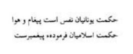
“Yunan Felsefesi hevâ ve hevesin mahsulüdür; halbuki mü’minlerin felsefesi Peygamber’in emir buyurduğu şeylerdir.”
Gerçekten Mevlânâ, Hazret-i Peygamber’in yolundan kıl kadar ayrılmamıştır. Kendisi:
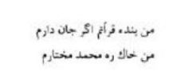
“Ben oldukça Kur’ân’ın kölesiyim.
Ben Hazret-i Muhammed’in yolunun toprağıyım”
diyor. Şu hâlde, Eflâtun’un düşünceleri ile Mevlânâ’nın düşüncelerinin bazı noktalarda aynı olduğu hakikatini nasıl izah edeceğiz?
Hazret-i Âdem’den beri hakikat, insanlara duyurulmuş, bildirilmiştir. Bu sebeple Eflâtun da kendisinden evvel gelen büyük dinlerin ve felsefî cereyanların etkisi altında kalmıştır. Onun kitaplarındaki hakîkat kırıntıları, bu büyük dinlerin kaynağından gelebilir. Zaten tevhid babında (tek Tanrı inancında) semâvî dinler müşterek bir imana varırlar. Kaldı ki, bazı İslâm mütefekkirleri, Eflâtun’u, Kur’ân-ı Kerim’de adı zikredilmeyen peygamberlerden saymışlardır.
Acaba Hazret-i Mevlânâ, Eflâtun’un eserlerini okudu mu? Okumuş olabilir. Çünkü kendi bildiği Rumca ile Eflâtun’un eserlerini okuyup anlamamış olsa dahi Eflâtun ve Aristo gibi büyük Yunan feylesoflarının eserleri ta Abbasiler devrinde Arapçaya tercüme edilmişti.
Şimdi Mevlânâ ile Eflâtun’un eserlerinde nazar-ı dikkatimizi çeken bazı müşterek görüş ve inanışları kısaca gözden geçirelim:
Gerek Eflâtun ve gerekse Mevlânâ, her ikisi de şu yaşadığımız hayatın bir evveliyatı olduğunu ifâde etmişlerdir. Her ikisi de bizler dünyaya gelmeden evvel ruhlarımızın, Eflâtun’un “ideler âlemi, misâl yahut örnekler âlemi” Mevlânâ’nın “rûh âlemi” dediği başka bir âlemde yaşadığı kanaatini benimsemişlerdir.
Eflâtun’a göre, dünyaya gelmeden önce, ruhlarımızın bulunduğu o âlemde, bu dünyada gördüğümüz her şeyin, en güzeli, en mükemmeli, en kusursuz örnekleri vardı.
Bu dünyada gördüğümüz bütün hoşumuza giden şeyler, mesela güzel bir çehre, güzel bir manzara, hoşumuza giden bir eser, bir mûsiki, rûh âleminde gördüğümüz güzellikleri, ruhumuza hatırlatmaktadır. Çünkü rûh âleminde gördüğümüz güzelliklerin, ruhumuzun hâtırasında bazı izleri kalmıştır. Bu sebeple Eflâtun: “Bilmek, sadece evvelce bilinen şeyleri hatırlamaktır.” demektedir.
Hazret-i Mevlânâ’ya göre bizim asıl vatanımız “mutlak güzellik âlemi” olan o âlemdir. Biz bu dünyada gurbetteyiz. Bütün insanlar burada birer gariptir. Eflâtun’un “ideler âlemi” dediği o âlem, bizim için kaybedilmiş bir cennettir. Biz o âlemden bu âleme sürgün edildik.
Mesnevî-i Şerif’ in dördüncü cildinde, 3628 nolu beyitle başlayan kısımda aynen şöyle deniliyor:
“Bir adam, yıllarca bir şehirde kalır da bir an gözünü kapadı, uyudu da rüya görmeye başladı mı kendisini iyi kötü şeylerle dolu bir şehirde bulur. Kendi esas şehri, hiç hatırına gelmez ‘Ben orada idim, bu yeni şehir benim şehrim değil, ben burada yabancıyım.’ demesi şöyle dursun o, kendini rüyada gördüğü o şehirde dünyaya gelmiş, aslı orası kendi vatanı imiş de orada yaşıyormuş zanneder. Ne şaşılacak şeydir ki rûh da doğup yetiştiği, yaşadığı esas vatanını, öz yurdunu hatırına bile getirmez. Bulutların, yıldızlan kapadığı gibi şu dünya hayatının da onun gözlerini perdelediğini düşünmez.”
Burası bizim için bir sürgün yeridir ve rûhlarımız da vücutlarımıza hapsedilmiştir. Mevlânâ bir şiirinde, “Ben neredeyim, hapishane nerede? Ben kimin malını çaldım ki bu beden zindanına hapsedildim?” demektedir.
Asıl yurdumuz olan rûh âleminden ayrılmakla biz muztaribiz. Mesnevî’nin en başında bu ayrılıktan acı acı şikâyet edilmektedir. Aslımızdan ayrıldığımız için başımız derde girmiştir. Mevlânâ’ya göre ölüm nedir? Ölüm, ıstırab dünyasından kurtulmak, asıl vatanımıza dönmektir. Bu sebeple ölüm bir kurtuluştur. Ruhun beden zindanından kurtulması, rûh âlemine dönmesi, hüsn-i mutlaka kavuşması, ölümü korkunç olmaktan çıkarmış, tatlılaştırmıştır. Büyük Mevlânâ’nın ölüm gecesine “Şeb-i Arus” (düğün gecesi) denmesinin sebebi budur.
“Öldüğüm gün tabutum giderken, bende bu cihânın derdi, tasası var sanma. Cenazemin götürüldüğünü görünce ‘Ayrılık, ayrılık!’ deme. Ölüm günü benim için sevgiliye kavuşma ve buluşma günüdür.”
Aynı îmanladır ki, Hallac-ı Mansur teessür duymadan darağacında can vermişti.
Aynı îmanladır ki, Feridüddin-i Attar hazretleri kendisini köle olarak satmak isteyen Moğol askerini kızdırmış, bile bile ölümü göze almıştı.
Aynı îmanladır ki, Seyyid Nesîmî şikâyet etmeden derisini yüzdürmüştü.
Yine aynı îmanladır ki, Eflâtun’un hocası Sokrates de baldıran zehrini gülerek içmiş ve ölümün kucağına üzüntü duymadan atılmıştı. Eflâtun’un “Fedon rûhun ölmezliği” adlı eserinin sonunda anlatılan bu ölüm hikâyesi ibretle okunmaya değer.
Eflâtun’a göre bu dünyada gördüğümüz her şey, daimi bir değişikliğe mâruzdur. Burada her şey tam ve mükemmel değildir.
Bizi burada büyüleyen her güzelliğin en güzeli, her iyinin en iyisi “ideler âlemi”nde yani örnekler âlemindedir. Bu sebeple burada yok olan fâni güzeller için üzülmememiz gerekir. Hazret-i Mevlânâ bu meseleye temas eden bir şiirinde şöyle demektedir:
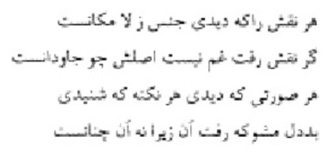
“Bu dünyada gördüğün her maddenin, her nakşın aslı, rûh âlemindedir. Nakış gitti diye gam yeme, gördüğün her güzel yüz, işittiğin her nükteli söz yok oldu ise üzülme, zira hakikat, sadece bu dünyada gördüklerinden, bildiklerinden ibaret değildir.”
Evet, bu dünyada gördüğümüz her varlık gelip geçicidir. Bu sebeple bizim bu hayâllere gönlümüzü kaptırmamamız, örneklerin örneğini, güzellerin güzelini aramamız lâzımdır. Bir başka deyimle, bu hayâl âleminin ötesine geçmemiz, fâni âlemden bekâ âlemine doğru yönelmemiz gerekir.
Mevlânâ’ya göre bu dünyaya sürgün edildikten sonra, Tanrı, bize kurtulmak için imkânlar vermiştir. Ölümü beklemeden ihtiraslarımızı öldürerek, dünyevî arzulardan kurtularak rûh âlemine doğru yükselebiliriz. Önümüze yükselmek için bir aşk merdiveni konmuştur:
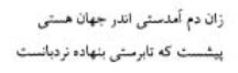
“Bu varlık âlemine geldiğin andan beri, kaçabilmen ve kurtulabilmen için önüne bir merdiven konuldu.”
Mevlânâ her vesile ile rûhumuzun, beden zindanında hapsedilmiş olduğunu düşünmekte ve kurtuluş yollarını tahayyül etmektedir.
Bir ilkbahar günü bahçelerde dolaşırken, kış mevsiminde ölü gibi cansızlaşan kuru dalların canlandığını, tomurcuklandığını, yapraklandığını görüyor. Tomurcukların, dalların sert kabuklarını yararak çıktıklarını ve zafer sancakları gibi neşe ve heyecanla yapraklarını açtıklarını müşahede ediyor. Bu narin yeşil yapraklar, hangi kuvvetle, kuru sandığımız dalların sinesinden baş kaldırdılar, kabukları delerek, karanlık bir dünyadan, günün ışığına çıktılar ve hapisten kurtuldular.
Büyük mütefekkir aynı zamanda büyük şair Mevlânâ yaprağa soruyor:
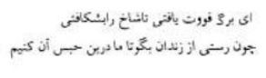
“Ey yaprak, elbette bir kuvvet buldun da dalı yarıp çıktın, ne yaptın da zindandan kurtuldun? Söyle, söyle de biz de bu hapishaneden kurtulmak için senin yaptığını yapalım.”
Bu madde âleminin hapishanesine atılan insanın, esaret ve hapis hayatına alışması ve buradan çıkmanın, kurtulmanın yollarını aramaması, bulunduğu bu hayâl âlemini gerçek bir âlem sanarak gönlünü buraya bağlaması, nereden geldiğini unutması ne acıdır.
Senelerce kafeste yaşayan bir kuşun, bir ilkbahar sabahı, kafesini açsak da onu hürriyete kavuşturmak istesek esâret hayatına alışmış olan kuş, dışarıdaki hürriyetin zevkini bilemeyeceği için, şaşkın şaşkın kafes etrafında uçarak dolaştıktan sonra yine kafese dönecek ve unuttuğu vatanını, hürriyetini istemeyecektir. Çünkü o, kafes hayatını benimsemiştir. Çünkü o, esareti gerçek hayat sanmaktadır.
Bunun gibi insan da aşağı duygularının, hayvanî arzularının ve cismanî zevklerinin etkisi altında kalarak yaşadığı bu madde âlemini esas vatanı saymakta ve ne yazık ki aldanmaktadır.
Mevlânâ, rûh âleminden bu fâni âleme sürgün edilen insana, kendisinin ne olduğunu, nereden geldiğini anlamaya çalışmasını ve buradan uzaklaşmasının ve asıl vatanına dönmesinin gerekli olduğunu sık sık hatırlatır:
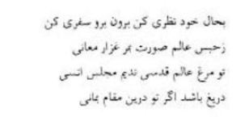
“Kendini, hâlini düşün, kendini anlamaya çalış. Dışarı git, seyahate çık, asıl yurdunu ara, madde âleminin hapishanesinden uzaklaş, mânâ âlemine sefer et. Sen kutsal rûh âleminin kuşusun. Bu fâni dünyayı benimser, burada kalmak istersen sana yazık olur.”
İşte, sürgün edildiğimiz bu dünyayı ve dünyanın sayılmayacak kadar çok olan maddî nimetlerini ve burada görülen fâni güzelleri, gelip geçici güzellikleri değil ebedi olan Allah’ı düşünmek, O’nu vicdanında bulmak, gönlünde hissetmek, O’nu sevmek meselesi ortaya çıkıyor.
İşte Eflâtun’a nispetle Eflâtunî aşk, Platonik aşk denilen ilâhî aşk budur. Zamanla solan, güzelliğini kaybeden, çirkinleşen güzelleri değil, kendini, kendine perde yaptığı eserleri arkasına gizleyen, eserleri ile bize varlığını hissettiren, bilinen, fakat görülmeyen, sonsuz olan, ölümsüz olan güzellerin güzelini sevmek kolay mıdır?
Yalnız güzelliği ve güzellikleri değil, her şeyi yaratan ve yaratmakta olan en büyük varlığı, yani Allah’ı nasıl bulacağız? Nasıl seveceğiz?
Allah’ı herkes kendi zâviyesinden görür. Allah, herkesin zannına, anlayışına, idrakine göre ifâde edilir. Biz Allah’ı, Hazret-i Musa’nın rastladığı çoban gibi mi arayacağız?
Mesnevî-i Şerifin ikinci cildinde malûm bir hikâye vardır:
Bir gün Hazret-i Musa yolda giderken bir çobana rastlıyor. Çobanın Allah’a şöyle seslendiğini duyuyor: “Allah’ım, sen neredesin? Ben sana hizmet etmek istiyorum. Senin çarıklarını dikmek, saçlarını taramak arzusundayım. Benim canım da çoluk çocuğum da sana feda olsun. Allah’ım neredesin, sen neredesin? Seni temizleyeyim, çamaşırlarını yıkayayım, bitlerini kırayım, sana koyunlarımdan süt sağayım, karnını doyurayım. Sen hasta olursan kendim hasta olmuş gibi kederlenirim. Sen bana evini göster, ben devamlı olarak sabah akşam sana yağ getireyim, süt getireyim, peynir getireyim, seni besleyeyim.”
Çobanın bu samimi hitabının, onu Allah’a ne kadar yaklaştırdığını Hazret-i Musa önce anlayamamış ve Cenâb-ı Hak tarafından ihtara da mâruz kalmıştı.
Herkes, zannına göre, anlayışına, kabiliyetine ve Allah’ın inâyetine göre Allah’ın her şeyde, her zerrede kudretini görmektedir. Sadî’nin meşhur beytini hatırlamamak elden gelmiyor:
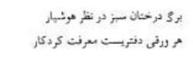
“Akıllı adamların nazarında, bitkilerin, ağaçların her bir yaprağı, Allah’ı ve sanatını anlatan birer kitaptır.”
Bazıları, her şeyi, bütün kâinatı O’ndan ibâret sandı. Bazı mutasavvıfların “Her şey odur.” dedikleri bu inanç Batı felsefesinde Panteizm ile ifâde edilmiştir; bu “Vücûdiye Mezhebi” olup (Vahdet-i Mevcud) İslâmî inanca aykırıdır. İslâm tasavvufundaki “Vahdet-i Vücud” ile Panteizmi birbirine karıştırmamak lâzımdır.
Vahdet-i Vücud’da “Her şey O’ndandır.” demek olan bu inanca göre eşyada, her zerrede Allah’ın kudreti, sanatı görünmektedir. Fakat, görünen şeyler, hâşâ, Allah değildir. Üzerine güneşin nûru düşen her nesneye biz, güneş diyebilir miyiz?
Eflâtun, Allah’ı çok aradı, bulamadı. Çünkü O bir feylesoftu; feylesof, akılla, mantıkla hareket eder. Halbuki Mevlânâ’nın yolu gönül yoludur.
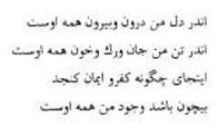
“Gönlümün içi de dışı da O’dur. Bedenim de can da damar da kan da bütün O’dur. Artık böyle bir yere kâfirlik, îman nasıl sığar? Varlığım, niteliksiz bir hâle gelmiştir. Çünkü bütün varlığım O olmuştur.”
Mevlânâ güzellerin güzelini, önce kendinde hissetti, sonra her şeyde, her zerrede O’nu buldu:
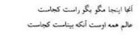
“Orada, burada deme, doğru söyle 0 nerededir? Bütün âlemde 0 vardır. Fakat O’nu görebilecek göz nerede?”
Mevlânâ başka bir şiirinde de şöyle buyurur:
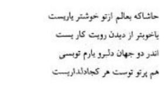
“Âlemde senden daha güzel bir yâr, senin yüzünü görmekten daha güzel bir iş olur mu? Hâşâ olmaz. İki cihanda da güzelim, yârim, sen olman bana yeter. Her nerede bir güzellik varsa hepsi senin parıltındır.”
Her zerrede, her varlıkta Cenâb-ı Hakk’ın kudreti, büyüklüğü sezilince her yerde, O’nu hâzır ve nâzır bulmak gâyet tabiîdir:
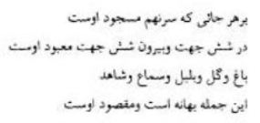
“Her nereye başımı koysam, secde edilen ancak O’dur. Altı cihette ve altı cihetten dışarıda mâbut ancak O’dur. Bağ, gül, bülbül, güzel hepsi birer bahanedir. Bunların hepsinden maksat O’dur.”
Eflâtun’un “Devlet” adlı kitabında bir mağara temsili vardır: Eflâtun’a göre bizler, büyük bir mağarada ayakları, elleri ve kolları bağlı sırtlarımız mağaranın kapısına dönük oturan esirler gibiyiz. Mağaranın ağzında büyük bir ateş yakılmıştır. Bu ateşin alevleri önünde birtakım yükler taşıyan ve kendi aralarında konuşan ırgatların akseden gölgelerini mağaranın duvarlarında seyrederken, onların bize kadar gelen karışık ve boğuk seslerinden bir şey anlamayız.
Bunun gibi bizler bu dünyada mevcut bulunan varlıkları ve eşyayı birer hayâl olarak görürüz. Çünkü esirler gibi ayaklarınız bağlıdır. Dışarı çıkamayız, hakikati göremeyiz. Sadece hayâller görürüz. Bu temsilde Eflâtun’un esirlerden maksadı vücutlarımızın zindanına hapsedilmiş rûhlarımızdır.
Vücut zindanında hapsedilmiş rûh, Eflâtun’un mağaranın duvarına aksettirdiği gölge ve hayâlleri (bugün sinema perdesinde seyrettiğimiz hayâller gibi) hakikat sanır ve kendi kendini aldatır.
Gerçek hayatı bulmamız için gölgeleri değil, gölgeleri düşenleri yahut gölgeleri düşüreni bulmamız, görmemiz lâzım.
Ünlü mütefekkir Emerson, görünen şu dünyayı, görünmeyen hakikî dünyanın bir sembolü sayar da “Görünen şeyler, görünmeyen şeylerin hayâlleridir.” der. Bu sözler Eflâtun’un ve büyük Mevlânâ’nın anlattıklarının başka türlü bir ifâdesidir.
Şu var ki rûh âleminden bu dünyaya akseden hayâllerin içinde, yahut görünmeyen âlemin görünen hayâllerini alan şu dünyada en üstün varlık insandır. Çünkü insanın rûhunda kâinatı yaratan büyük varlıktan bir emânet vardır, bir ilâhî kıvılcım vardır.
Hazret-i Ali,
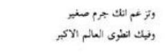
“Sen kendini küçük bir şey zannediyorsun. Halbuki sende en büyük bir âlem gizlidir” dedi.
Şeyh Galip de bir şiirinde şöyle demektedir:
“Hoşça bak zâtına kim zübde-i âlemsin sen
Merdüm-i dîde-i ekvân olan âdemsin sen”
Gerçekten eşref-i mahlûkat ve zübde-i âlem olan insanda, başka hiçbir varlıkta bulunmayan bir mânâ cevheri, bir ilâhî kıvılcım vardır. Bu ilâhî kıvılcım, aslına kavuşmak için hasretle, iştiyakla çırpınmakta, bizsiz, maddî varlığımızın ötesinden, titreyerek, yanarak, sıçrayarak koşmakta ve mânen O’nu aramaktadır.
Mevlânâ,
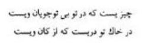
“Sende bir şey var ki o şey, sensiz O’nu arar, senin toprağının içinde bir inci vardır ki o inci O’nun mâdenindendir.”
diye insanda O’nun mâdeninden bir inci olduğunu haber veriyor. Bu sebeple insan, kâinatın en şereflisi en üstünüdür. Başka varlıklardan esirgenen, yalnız insana verilen ilâhî emânet sebebiyle insan dünyayı güzelleştirmiş, akıllara hayret veren şeyler icat ve ibdâ etmiştir.
İnsanın yaratıcısı tarafından kendisine lütfedilen bu ilâhî cevher sayesinde ortaya koyduğu eserlerden, icat ettiği makinelerden gurura kapılması, kendisinin bir şey yaptığını sanması, kendinden haberdar olmadığını gösterir. Aslında yaptıran, bulduran, hep O’dur. Mevlânâ insanın üstünlüğünü anlatırken der ki:
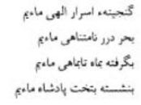
“Biz Allah’ın sırlarının hazinesiyiz, biz incilerle dolu sonsuz deniziz. Aydan balığa kadar her şeyin içinde olan biziz. Padişahlık tahtına oturan da yine biziz. Varlıkların en üstün olanı biziz.”
İnsan kendisinde bulunanı anladığı ve keşfettiği zaman hakikati bulacaktır. Fakat insan kendi varlığının hakikatini keşfedemiyor. Kendi vücudunun şehrine giremiyor.
Yunus Emre bir şiirinde:
İşbu vücudum şehrine
Bir dem giresim gelir.
İçindeki sultanın
Yüzün göresim gelir.
demişti. Vücut şehrine girmek ve içindeki sultanı görmek kolay değildir.
İnsan, hayâl âlemine dalmış, dikkatini kendine çeviremiyor. Etrafını ve kâinatı anlamakta çok ileri gitmiş, dünyadaki keşif ve icatlarıyla yetinmiyor. Şimdi de gökyüzünü keşfe çalışıyor. Sunî peyklere binip dünyanın etrafında dönüyor. Resimlerini çektiği Ay’a gitmeye uğraşıyor. Merih’te hayat olup olmadığını anlamak için gayretler sarf ediyor. Fakat kendi gönlüne inip de kendini keşfedemiyor. Daha doğrusu kendinde, kendini arayamıyor.
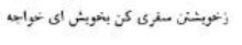
“Efendi, sen kendinden kendine sefer et, kendinde kendini ara!”
diyen gönüller sultanı Mevlânâ, akıl yordamı ile hakikati araştıran Eflâtun’u çok gerilerde bırakarak insan gönlünün derinliklerine indi. Hakikî insanı ve insanda bulunan cevheri keşfetti.
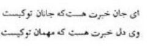
“Ey can, sevgilin kimdir, haberin var mı? Ey gönül, sende misafir olan kimdir, haberin var mı?”
diye seslendi.
Kendinde misafir olanı bulan ve onu seven için artık ayrılık mevzubahis olamaz.
Başkaları vuslat diye çırpınırken, sevgiliye kavuşmak için yanıp tutuşurken o,
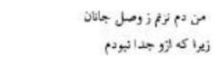
“Ben sevgiliye kavuşmaktan dem vurmuyorum, vuslattan bahsetmiyorum; çünkü ben, sevgiliden ayrı değilim.” diyor.
Kur’ân-ı Kerim’de insanın bütün varlıkların en şereflisi olduğunu, en güzel vasıflarla, en üstün meziyetlerle yaratıldığını anlatan birçok âyetler vardır:
“Biz gerçekten insanoğlunu şerefli kıldık.” (İsra Sûresi, 70. âyet)
“Muhakkak ki biz insanı mükemmel bir biçimde yarattık.” (Tin Sûresi, 4. âyet)
Allah’ın insana ne büyük teveccühlerde bulunduğunu O’nun sonsuz lütfunu ve ihsanını anlayabilmemiz için şu âyetlerin mânâsını düşünelim.
“Biz ona yakın olan şah damarından daha yakınız.” (Kaf Sûresi, 16. âyet)
Allah’ın insana, kendi şah damarından daha yakın olması ne demektir?
Vaktiyle bir gazetede okumuştum: Amerikalı zengin bir kadın vefatından evvel bıraktığı vasiyetnamede, “Ben şu kadar dolara malikim. Vârislerim de yoktur. Bıraktığım bu para ile dünya rasathanelerinde hâlen mevcut olan bütün teleskopların en mükemmeli yapılsın, onunla insanlar belki Allah’ı görebileceklerdir. Çünkü ben hayatımın en heyecanlı zamanlarını rasathanelerden gökyüzünde Tanrı’yı aramakla geçirdim. Fakat ne yazık ki, Tanrı’yı göremedim.” diye vasiyet etmişti.
Amerikalılar tuhaf insanlardır. Köpeklerine, kedilerine milyonlar bırakanlar oluyor. Bu kadıncağız da hayırlı bir iş için milyonlarını bırakmış; acaba vasiyeti yerine getirildi mi? Onu bilmiyorum, yalnız bildiğim bir şey var: Allah’ı, yeryüzünde, gökyüzünde aramak için ne teleskopa ne de başka bir âlete ihtiyaç vardır. “Allah yerlerin ve göklerin nûrudur.” (Nûr Sûresi, 35. âyet) Allah her yerde kudretini göstermekte, her zerrede varlığını açığa vurmaktadır. Allah bizim kalp gözlerimizi açsın da teleskop ihtiyacını duymadan O’nun varlığını mânen hissedelim; O’nu canımızda, gönlümüzde bulalım. Bize şah damarlarımızdan daha yakın olanı, gökyüzünde aramamıza ne lüzum var?
Niyazî-i Mısrî’nin dediği gibi:
Sağ u solum gözler idim
Dost yüzünü görsem diyü
Ben taşrada arar idim
Ol can içinde can imiş
Yine Kur’ân’da, Hadid Sûresi’nin 4. âyetinde, “Her nerede bulunursanız bulunun, Allah sizinle beraberdir.” diye buyrulmaktadır. Bu âyette, inanan insan için ne büyük bir müjde vardır. İhtiraslarını yenen, dünyevî arzularını ayak altına alan, gerçek insanlık vasfını kazanan imanlı bir kimse, O’nu kendinde hissedecek ve yalnızlıktan kurtulacaktır.
Büyük Mevlânâ, bu âyetin müjdesiyle heyecana kapılmış ve mübarek göğsüne neşe kıvılcımları sıçramıştır. Bir rubâisinde bu âyeti bahis konusu ederek diyor ki:
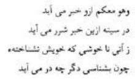
“‘Nerede bulunursanız bulunun, O sizinle beraberdir.’ Haberi Allah ‘tan geliyor. Bu haber, insanın gönlünü ümitle, neşeyle dolduruyor. Sen kendini tanımadığından ötürü neşelenemedin, huzura kavuşamadın. Eğer kendini tanısaydın, sende kimin misafir olduğunu bilseydin, memnuniyetsizlik, huzursuzluk denilen şeyler sana bir daha gelmezdi.”
Eflâtun, akıl yardımı ile diyalektik yolu ile yani hakikate ulaşmak için geçilen merhaleler vasıtasıyla, hakikati araştırmıştı. Halbuki Mevlânâ, aklın yüksek hakikatleri idrak edemeyeceğini biliyor ve aklı balçığa saplanmış merkebe benzetiyordu. 0, akıl yolunu bırakarak, ilhamla, Allah’ın lütfu ile kendinde kendini bulunca kendi kendine âşık oldu:
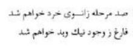
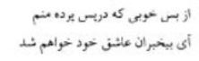
“Aklın bulunduğu yerden yüzlerce merhale uzaklaşmak, iyi ve kötünün mevcudiyetinden kurtulmak istiyorum. Bu perdenin arkasında ne kadar güzellikler var. Benim hakikî mevcudiyetim de oradadır. Ey akılları ermez kişiler, ben kendi kendime âşık olmak istiyorum.”
Eflâtun insanın faziletini izah ederken, “Fazilet, rûhun, misaller âlemindeki örneğine uyması, daha doğrusu Allah’a benzemesidir.” demişti. İnsanın, örneğine uyması için, kendini tanıması ve kendisinde bulunanı keşfetmesi gerekmekte idi. İnsanın nereden geldiğini ve kendisinde kimin misafir bulunduğunu hissetmesi, bilmesi icap ediyordu.
O zaman insan, kendini maddî bakımdan kendinden ayırt edecek ve kendisine değer verecekti.
Mevlânâ bu gerçeği daha çok derinleştirdi. Kendinde misafir bulunanı tanımak, sevmek ve ona lâyık bir kul olmak ve onun tarafından sevilmek için gereken yolları aradı, buldu.
Bu yol, insanlık yolu, kemâl yolu, aşk yolu idi.
Mevlânâ’ya göre; madem ki insanda ilâhî bir emânet vardır, insan bu emânetin değerini ve kendi kıymetini daha doğrusu insanlığını bilmelidir. İnsan, Allah tarafından kendisine lütfedilen ilâhî emâneti kabul ederek yeryüzünde onun halîfesi olmuştur. Şu hâlde, insan, etiyle kemiği ile kanı ile benzese dahi kendini hayvanlarla bir saymamalı, kendisinin üstünlüğüne inanmalıdır; yaratılmış varlıkların en şereflisi olduğunu bilmelidir; bu sebeple maddî varlığının, kendisini zorladığı beşeri kirliliklerden, yalandan, riyadan, gururdan, maddeye tapmaktan, ihtirastan, şehvetten uzaklaşmalı, temiz bir gönülle hakkı ve hakikati aramalıdır. Gerçek insanı ve insanlığı sevmelidir. O zaman Allah’ın emânetine hıyanet etmemiş olacak, o zaman Kur’ân’da haber verildiği gibi O’nun halîfesi olmakla şereflenecek ve insan nâmını taşımaya hak kazanacaktır.
Böyle hareket ederse insan, ihtiraslarını ve beşerî zaaflarını öldürerek daha ölmeden evvel aslını bulacak ve gurbetten kurtulacaktır. Sözümü Hazret-i Mevlânâ’nın bir rubâisi ile bitireyim:
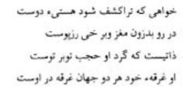
“Dostun varlığının, sana açılıp aydınlanmasını istiyor isen özün içine gir. Kabuktan yukarı çık, yüksel; dost bir zattır ki etrafında örtüler kat kattır. O kendi varlığına gark olmuş, iki cihân da onda gark olmuştur.”
Görüldüğü gibi her şey Hakk’ı tesbih etmektedir. Bu konuda Mevlânâ gibi bazı arifler de bu hakikati aşağıya koyduğumuz şiirlerinde dile getirmişlerdir.
Üstadımız, büyüğümüz Midhat Bahari hazretleri “Komşunun Ördekleri” başlığında bu konuyu terennüm etmişlerdir:
Komşunun Ördekleri
Bak şu ördeklere, vak vak ötüyorlar arada,
Ne kadar neşelidir, sesleri hep bir arada.
Hepsi baş kaldırarak vak vak eder, yem bekler
Ne diyor hâl diliyle bize, bak ördekler?
-Hasretiz biz denize, bir göle, hatta dere,
Gidelim, yok suyumuz, yüzmeğe bilmem nereye?
Bize bir lâhza suda yüzme verir başka hayat,
Yüzeriz, cilve eder, neşemiz artar kat kat
Oynaşır, koklarız, çırpınırız, keyf ederiz,
Dalarız, yükseliriz, dalgalar üzere gideriz...
Fakat eyvâh ki hep bunlara hasret kaldık;
Su, deyüp hâl-i perişanımıza biz daldık...
Siz gibi yer içeriz, gâh açız, gâh tokuz,
Şeklimiz benzemez amma, hepimiz mahlûkuz;
Veriniz bir avuç arpa, ya mısır şimdi açız,
Bizi Hak böyle yaratmış size muhtacız,
Bakınız hâlimize, ibret alın insanlar;
Sizdeki kudrete müştâk bütün hayvanlar.
Bizde vardır kanat amma, uçamaz göklerde,
Elimiz yok, var ayak kudreti yok köklerde,
Dilimiz varsa da âmâlimizi anlatmaz,
Ağzımız varsa da her nîmeti bilmez, tatmaz,
Gözümüz varsa da görmez özünü mânânın,
Aldatır sûreti, bir lokma yemi dünyanın;
Sözümüz: Ömrümüzün seyri gibi hep vak vak...
Ne desek, sözlerimiz çünkü hakikatten uzak.
İnâdiye Dergâhı şeyhlerinden biri “Sesler ve Nağmeler” diye bir manzumeyi kaleme almışlardı:
Sesler ve Nağmeler
Bütün esvat-ı hilkat tîz-pest elhan-ı hikmettir.
Kulak ver dinle ey dil cümlesi Hak’tan işarettir.
Denizde, yerde, göklerde açılmış sanki bir mektep
Zevil-ervah okur gizli açık üstad-ı fikrettir.
“Celâl”dir sayhası arslanların dehşet verir halka
“Cemâl”dir kuştaki nağme müeddası beşârettir
Sakın sen sanma vak! vak! Gölde kaz, ördek çeken Ya
Hak!
Ağaçta kumrunun Hu! Hu! ları Hakk’a ibâdettir.
Öter gülşende bülbül mübtelâ-yı kîl ü kâl olmuş
O murgun derdi; gül, sümbül sanıp kanmak
belâhattir
anarya aynı vahdet mevcesi ile çırpınıp söyler
Seda-yı bunu meş’un bir nida sanmak hamâkattır
Nây’ın feryadı her dem vağfu anna ente Mevlânâ
Kemânın bigüman Allahuekberden ibârettir
Seda-yı mûsiki gûş etse rûhen gaşy olur âşık
Sazın her bir telinden duyduğun gülbang-ı vahdettir
İlâhî ente maksudî bütün seslerdeki elhan rızadır
Cümlenin matlûbu bakisi hikâyettir.
Bu manzumenin bugünkü dile tercümesi:
Dünyadaki bütün tiz, pes sesler Allah’ın hikmetini terennüm etmektedir.
Ey gönül, kulak ver de dinle bu seslerin hepsi Hak’tan ibârettir.
Denizde, yerde, göklerde sanki bir mektep açılmış
Canlı olan her şey bu mektepte gizli açık olarak dersler alır, bir şeyler okur.
İnsanları korkutan, dehşet veren aslanların sesi, Hakk’ın “Celâl” sıfatını belirtmektedir.
Kuşların ötüşleri ise Hakk’ın “Cemâl” sıfatını belirtmektedir.
Sakın sen göldeki kazların, ördeklerin vak vak seslerini yanlış anlama, onlar lisan-ı hâl ile “Ya Hak!” diye nida etmektedirler.
Ağaçtaki kumruların “Hu! Hu!” diye ötmeleri Hakk’a ibâdetten başka bir şey değildir.
Gül bahçesinde bülbül ötüp durmaktadır. Onu güle, sümbüle âşık olduğu hakkında hikâyeler anlatırlar.
Aslında bülbül güle, sümbüle âşık değildir. Hakk’a âşıktır. Başka bir şey sanmak aptallıktır.
Kafeste çırpınıp duran kanarya da Allah’ı zikretmektedir.
Baykuşun sesini uğursuz sanmak aptallıktır. O da Hakk’ı zikretmektedir.
Nây’ın feryadı ise her an “Sen bizim Mevlâmızsın, bizi affet.” sözüdür.
Hiç şüphe etme ki, keman da lisan-ı hâl ile “Allahuekber” demektedir.
Âşık musiki seslerini duyduğu zaman rûhen kendinden geçer. Çünkü sazın her bir telinden bir Vahdet Gülbankı duyulmaktadır. İlâhî bütün seslerde “Allah’ım biz sana âşığız, senin rızanı istiyoruz” nidası gizlidir.
Bundan başkası hikâyedir.